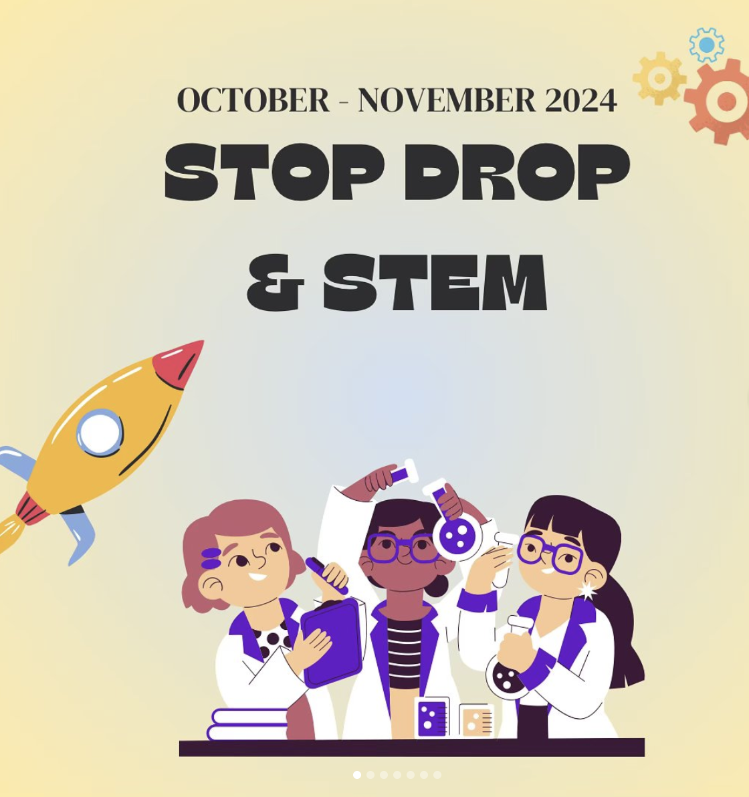

PROJECT 02
Bridge to Hope is a student-run organization I founded to support children affected by poverty through educational, interactive, and free-of-charge workshops. The organization grew to over 50 volunteers and focused on combining service, education, and community outreach.
As Founder and Executive Director, I organized volunteers, planned workshops, coordinated outreach, and led initiatives designed to make educational resources more accessible to children.
Bridge to Hope developed a volunteer network of over 50 students and supported community-based service projects. One major initiative was a city-wide food drive that helped feed over 300 children in Imperial County, California.
I participated as a guest speaker for Stop, Drop, & STEM, a Boeing program that aims to provide STEM learning and career-related opportunities for students who attend schools in under-resourced areas. Organized by my summer internship program coordinator Ashley Jackett, this session was held at Gardena High School.
Through hands-on workshops ranging from an egg drop activity to learning about different types of energy transfer through popcorn, students were able to explore the world of STEM in an interactive and accessible way.

Stop, Drop, & STEM at Gardena High School (click image to view Instagram post)
I led the organization by recruiting volunteers, designing workshop structures, communicating with community partners, and organizing service events.
Leadership, Volunteer Management, Community Outreach, Public Speaking, Program Planning, Communication, Education, Social Impact
This project taught me how to turn an idea into an organized community initiative. I learned how to manage people, communicate a mission clearly, and design programs that are both meaningful and practical.
← Back to Projects